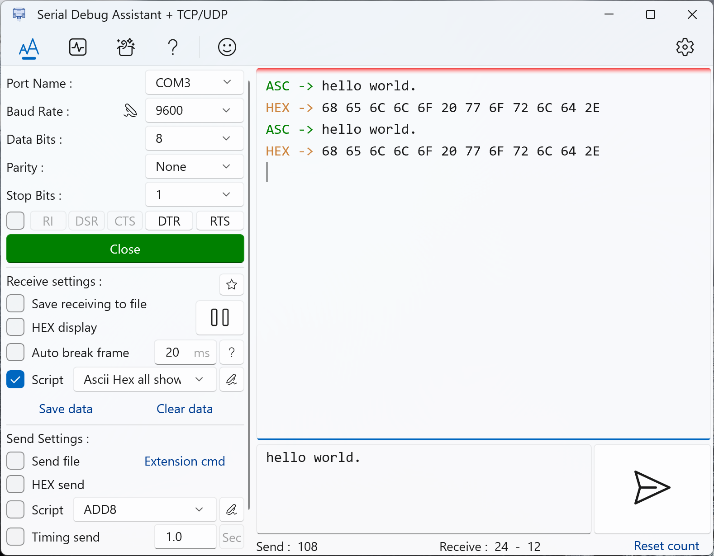

Serial port debug shows both ASCII and HEX
Serial debugging software generally supports string display and hexadecimal display. Usually the
switch is achieved
through a checkbox. What if you need to display both ASCII and HEX characters at the same time?
Serial Debug Assistant supports receiving scripts. You can select the receiving script and
implement the corresponding
display logic in the script.
Click the script edit button and create a new script named "Ascii Hex all show" and add the
following code to the
script.
As shown in the figure below, cancel the hexadecimal display and enable the receiving script. When the serial port receives data, ASCII and HEX will be displayed at the same time. This is convenient for subsequent debugging.
js script
(function main() {
let str = receive.get(); //Read the Received string
let buf = receive.getBytes();
//receive.write(util.timeToString()+'\n');
receive.write('ASC -> ', 'Green');
receive.write(str); //Show received string
if (!str.endsWith('\n'))
receive.write('\n');
receive.write('HEX -> ', 'Peru');
receive.write(util.bytesToHexString(buf, true) + '\n');
return;
})();
Download Serial Debug
Assistant
Serial Debug waveform description